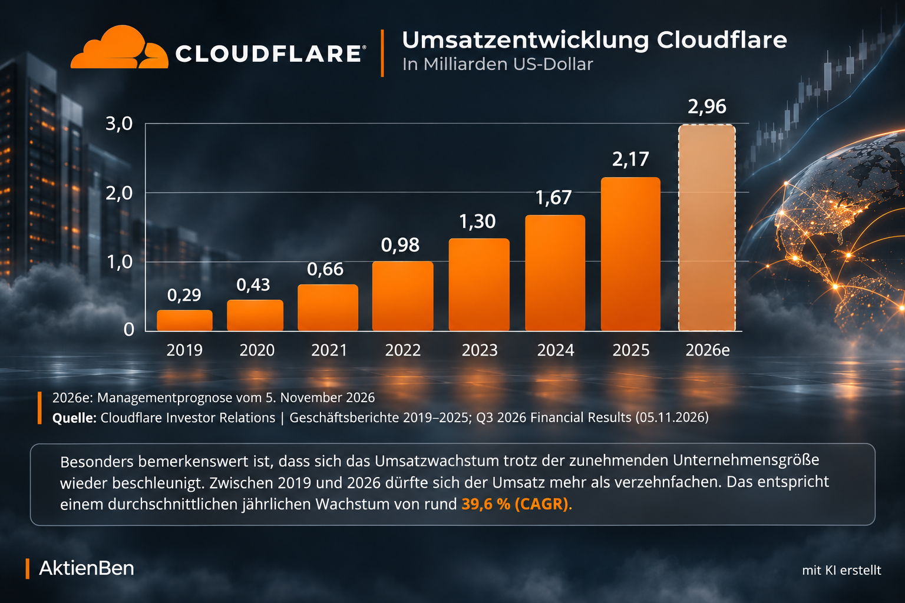
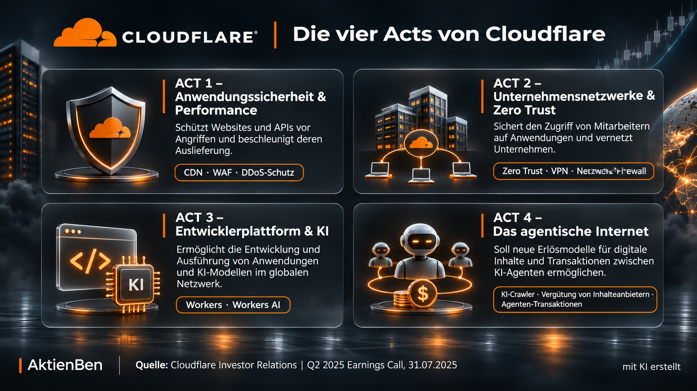
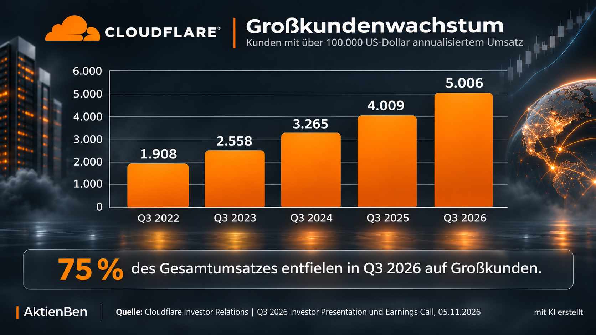
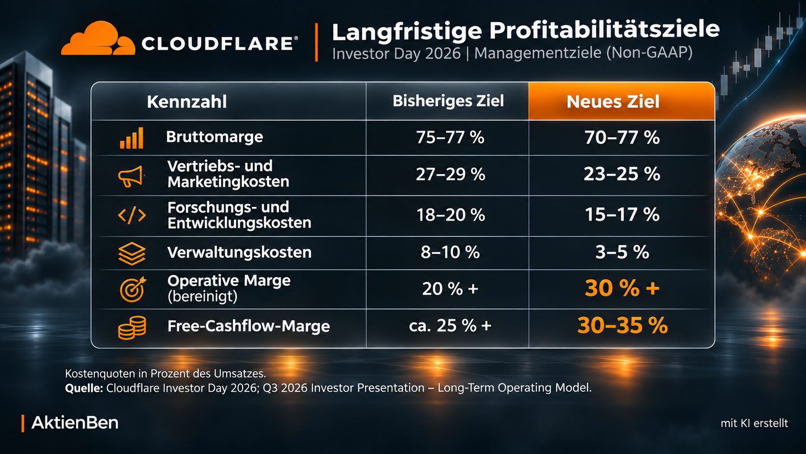
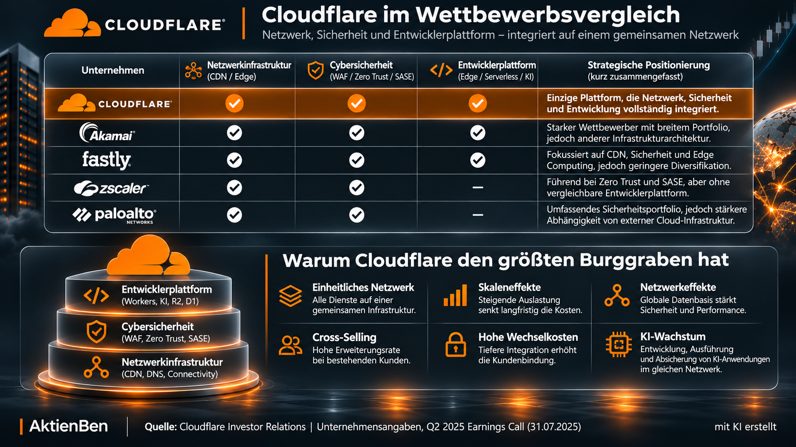
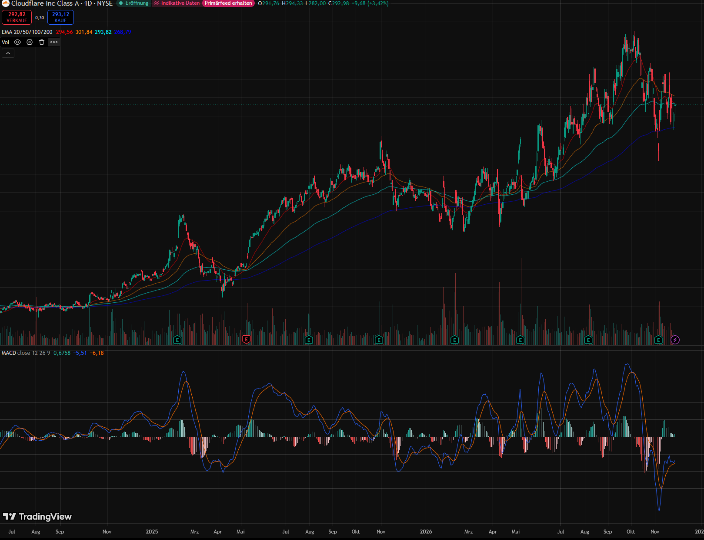
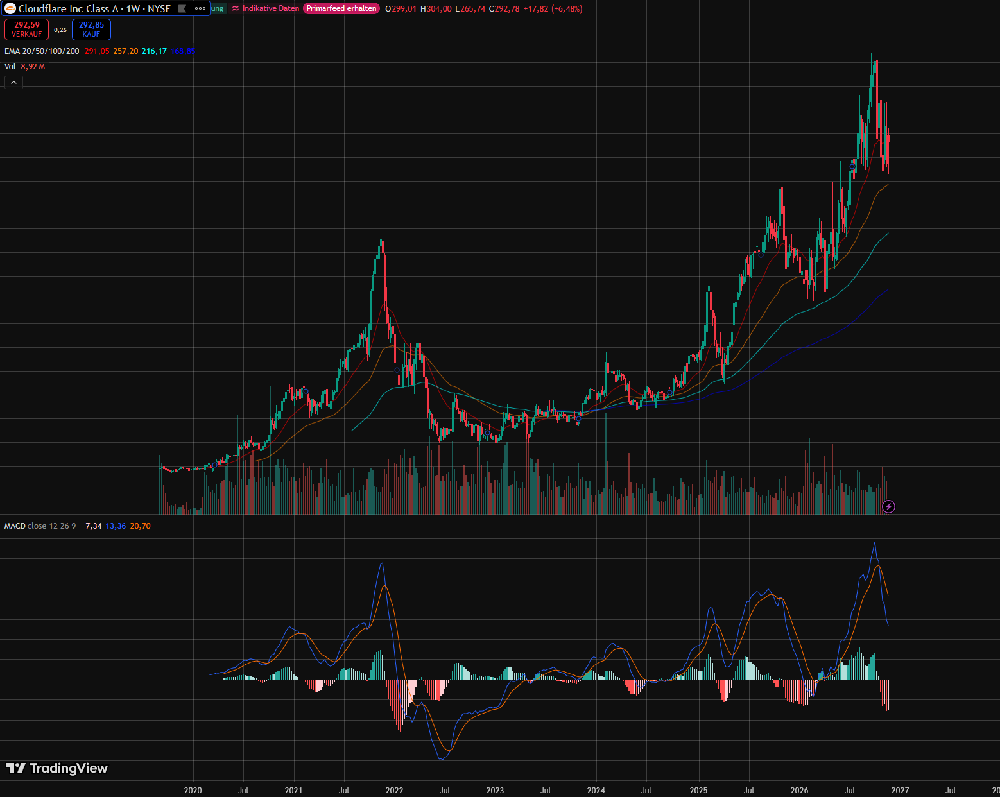

Was ist Cloudflare?
Cloudflare (NYSE: NET) wurde 2009 gegründet und ist heute einer der bedeutendsten Anbieter globaler Internetinfrastruktur. Das Unternehmen verfolgt seit seiner Gründung das Ziel, das Internet schneller, sicherer und zuverlässiger zu machen. Geleitet wird Cloudflare bis heute von Mitgründer Matthew Prince.
Ursprünglich konzentrierte sich Cloudflare darauf, Webseiten vor Cyberangriffen zu schützen und deren Ladezeiten zu verkürzen. Mittlerweile hat sich das Unternehmen zu einer umfassenden Plattform für Cybersicherheit, Netzwerkinfrastruktur, Cloud-Computing und die Entwicklung von KI-Anwendungen entwickelt.
Vereinfacht gesagt positioniert sich Cloudflare zwischen dem Nutzer und dem Server, auf dem eine Webseite oder Anwendung betrieben wird. Dadurch kann Cloudflare den Datenverkehr analysieren, optimieren und vor Angriffen schützen, bevor dieser überhaupt den eigentlichen Server erreicht.
Hierfür betreibt das Unternehmen ein eigenes globales Netzwerk in über 340 Städten. Dieses Netzwerk bildet die Grundlage für nahezu sämtliche Produkte des Unternehmens.
Die wichtigsten Kennzahlen (Q3 2026):
| Kennzahl | Wert |
|---|---|
| Quartalsumsatz | 782,5 Mio. USD |
| Umsatzwachstum | +39,2 % |
| Umsatzprognose 2026 | 2,96 Mrd. USD |
| Bruttomarge (GAAP) | 71,2 % |
| Operative Marge (Non-GAAP) | 17,5 % |
| Free Cashflow | 82,1 Mio. USD |
| Großkunden | 5.006 |
| Entwickler auf der Plattform (Oktober 2026) | Über 10 Mio. |
| Mitarbeiter | Über 4.700 |
Seit seinem Börsengang im Jahr 2019 hat Cloudflare eine beeindruckende Entwicklung hingelegt.

Das Umsatzwachstum hat sich zuletzt trotz der zunehmenden Unternehmensgröße beschleunigt. Im dritten Quartal 2026 konnte Cloudflare mit 39 % das höchste Umsatzwachstum seit knapp vier Jahren erzielen.
“We accelerated growth, delivering our fastest revenue growth in nearly four years, while expanding profitability.” – Matthew Prince, CEO, Q3 2026 Financial Results
Wie funktioniert das Geschäft?
Cloudflare verdient sein Geld überwiegend mit wiederkehrenden Verträgen sowie zunehmend mit der nutzungsabhängigen Abrechnung seiner Dienstleistungen. Das Geschäftsmodell lässt sich vereinfacht in vier Bereiche unterteilen, die das Management als unterschiedliche Entwicklungsphasen (Acts) betrachtet.

Act 1 – Sicherheit und Performance von Webseiten
Das ursprüngliche Kerngeschäft von Cloudflare.
Über sein CDN (Content Delivery Network) speichert Cloudflare Inhalte dezentral auf seinem globalen Netzwerk. Dadurch können Webseiten schneller geladen werden, da die Inhalte von einem geografisch näher gelegenen Server bereitgestellt werden.
Gleichzeitig schützt Cloudflare Webseiten vor DDoS-Angriffen (gezielte Überlastung von Servern), schädlichen Bots und anderen Cyberangriffen.
Für Privatpersonen und kleinere Webseiten bietet Cloudflare kostenlose Basisfunktionen an. Unternehmen zahlen für umfangreichere Sicherheitsfunktionen, höhere Leistungsfähigkeit und zusätzliche Dienstleistungen.
Act 2 – Cloudflare One und Unternehmenssicherheit
Mit Cloudflare One adressiert das Unternehmen die gesamte Netzwerksicherheit seiner Kunden.
Während Unternehmen früher ihre internen Netzwerke hauptsächlich durch physische Firewalls und VPNs (Virtual Private Networks) schützten, verlagert sich die Sicherheit zunehmend in die Cloud.
Cloudflare verfolgt hierbei einen Zero-Trust-Ansatz. Jeder Zugriff auf Unternehmensdaten und Anwendungen muss unabhängig vom Standort des Nutzers überprüft und autorisiert werden.
Unternehmen können dadurch verschiedene Sicherheitslösungen durch eine zentrale Plattform ersetzen und ihre Netzwerkinfrastruktur vereinfachen.
Act 3 – Cloudflare Developer Platform
Cloudflare ermöglicht es Entwicklern, eigene Anwendungen direkt auf seinem globalen Netzwerk zu erstellen und auszuführen.
Zu den wichtigsten Produkten zählen:
- Cloudflare Workers: Ausführung von Programmcode ohne Verwaltung eigener Server.
- Cloudflare R2: Speicherung großer Datenmengen ohne klassische Gebühren für den ausgehenden Datentransfer.
- Workers AI: Ausführung von KI-Modellen auf Cloudflares Infrastruktur.
- Cloudflare D1: Datenbanken für Cloud-Anwendungen.
- AI Gateway: Verwaltung und Überwachung von Zugriffen auf KI-Modelle.
Cloudflare entwickelt sich damit zunehmend von einem Unternehmen, das Anwendungen schützt, zu einem Unternehmen, auf dessen Infrastruktur die Anwendungen selbst betrieben werden.
Act 4 – Monetarisierung des KI-Internets
Der neueste Geschäftsbereich beschäftigt sich mit der Monetarisierung von Daten und automatisiertem Internetverkehr.
KI-Unternehmen benötigen enorme Mengen an Informationen, die unter anderem von Webseiten stammen. Cloudflare ermöglicht es Webseitenbetreibern, den Zugriff von KI-Bots zu kontrollieren und künftig stärker zu monetarisieren.
Hier könnte Cloudflare die Rolle eines Vermittlers zwischen den Anbietern von Informationen und den KI-Unternehmen einnehmen.
Das übergeordnete Geschäftsmodell
Cloudflare verfolgt eine sogenannte Land-and-Expand-Strategie. Kunden beginnen häufig mit einem einzelnen Produkt oder einem kostenlosen Angebot und beziehen im Laufe der Zeit immer mehr Dienstleistungen von Cloudflare.
Zudem können Großkunden über sogenannte Pool-of-Funds-Verträge ein bestimmtes Budget vereinbaren, welches flexibel für unterschiedliche Produkte der Plattform verwendet werden kann.
Dadurch kann Cloudflare nicht nur durch die Gewinnung neuer Kunden wachsen, sondern auch durch die zunehmende Nutzung seiner Plattform durch bestehende Kunden.
Wachstumschancen
KI-Agenten und die Entstehung des Agentic Internet
Für mich liegt die wahrscheinlich größte Wachstumschance von Cloudflare in der zunehmenden Verbreitung von KI-Agenten.
Klassische KI-Bots beantworten vor allem Fragen. KI-Agenten erledigen Aufgaben eigenständig, rufen Informationen ab, bedienen Anwendungen und interagieren mit anderen Systemen.
Ein einzelner Agent kann in kurzer Zeit zahlreiche Internetanfragen auslösen. Übernehmen KI-Agenten einen großen Teil der digitalen Arbeit, dürfte der automatisierte Datenverkehr deutlich steigen.
Cloudflare profitiert sogar doppelt. Das Unternehmen kann sowohl die KI-Anwendungen selbst betreiben als auch deren Kommunikation mit anderen Anwendungen absichern, beschleunigen und verwalten.
Auf dem Investor Day 2026 bezeichnete das Management diese Entwicklung als grundlegenden Wandel des Internets.
Cloudflare muss dabei nicht zwangsläufig darauf wetten, welches KI-Modell sich langfristig durchsetzt. Das Unternehmen stellt die Infrastruktur bereit, auf der unterschiedliche KI-Anwendungen aufbauen können.
Aber auch unabhängig von KI wächst Cloudflare.
“We're seeing strong growth around financial services, government, manufacturing, healthcare, e-commerce, across the board.” – Matthew Prince, CEO, Q3 2026 Earningscall
Starkes Wachstum der Entwicklerplattform
Die zunehmende Bedeutung von Cloudflare für Entwickler lässt sich bereits anhand konkreter Zahlen erkennen.
Im Herbst 2026 nutzten laut Management über 10 Millionen Entwickler die Plattform. Allein innerhalb eines Quartals stieg diese Zahl von rund sieben auf zehn Millionen.
Bereits 2025 wuchs der ARR (Annual Recurring Revenue, jährlich wiederkehrender Umsatz) des Entwicklergeschäfts um 137 %.
Je mehr Entwickler ihre Anwendungen auf Cloudflare aufbauen, desto mehr potenzielle zahlende Kunden entstehen langfristig. Wachsen diese Anwendungen, wächst auch deren Bedarf an Rechenleistung, Datenspeicherung, Sicherheit und Netzwerkdiensten.
Cloudflare kann somit unmittelbar am Erfolg der auf seiner Plattform entwickelten Anwendungen partizipieren.
Zunehmende Bedeutung von Cybersicherheit
Nicht nur die Entwicklung von KI-Anwendungen, sondern auch die Absicherung des Internets dürfte durch künstliche Intelligenz erheblich an Bedeutung gewinnen.
Mit KI lassen sich Cyberangriffe stärker automatisieren, schneller durchführen und in größerem Umfang skalieren.
Unternehmen werden daher zunehmend darauf angewiesen sein, ihre digitale Infrastruktur kontinuierlich zu überwachen und ihre Sicherheitsmaßnahmen auszubauen.
Cloudflare profitiert hierbei von seiner zentralen Position im Internet und der Möglichkeit, Angriffsmuster aus unterschiedlichen Bereichen seines Netzwerks zu erkennen und die gewonnenen Erkenntnisse für den Schutz weiterer Kunden einzusetzen.
Der ARR von Cloudflare One konnte bereits 2025 um 43 % gesteigert werden. Damit entwickelt sich die Unternehmenssicherheit neben der Entwicklerplattform zu einem weiteren starken Wachstumstreiber.
Wachstum durch Großkunden
Ein wesentlicher Bestandteil der zukünftigen Unternehmensentwicklung ist die zunehmende Gewinnung großer Unternehmenskunden.
Die Anzahl der Kunden, die mehr als 100.000 USD annualisierten Umsatz generieren, hat sich innerhalb weniger Jahre deutlich erhöht.

Auch die DBNRR (Dollar-Based Net Retention Rate, Nettoumsatzbindung bei Bestandskunden) entwickelte sich zuletzt positiv und erreichte 122 %. Das bedeutet, dass Cloudflare mit seiner bestehenden Kundenkohorte auf Nettobasis 22 % mehr annualisierten Umsatz generiert als im Vorjahr.
Je mehr Produkte ein Unternehmen von Cloudflare bezieht, desto größer wird das Umsatzpotenzial innerhalb der bestehenden Kundenbasis.
Durch den weiteren Ausbau des Partnernetzwerks und eine effizientere Vertriebsstruktur kann Cloudflare zukünftig noch mehr Großkunden erreichen.
Monetarisierung von Daten und Internetverkehr
Mit Act 4 könnte Cloudflare langfristig einen völlig neuen Markt erschließen.
Bislang können zahlreiche KI-Anbieter Inhalte aus dem Internet abrufen, ohne die jeweiligen Webseitenbetreiber dafür direkt zu vergüten. Gleichzeitig könnten klassische Einnahmequellen vieler Webseiten, beispielsweise durch Werbung, an Bedeutung verlieren, wenn Nutzer ihre Informationen zunehmend direkt über KI-Modelle beziehen.
Mit Pay Per Crawl schafft Cloudflare die technologische Grundlage dafür, dass Webseitenbetreiber Gebühren für den Zugriff bestimmter KI-Bots verlangen können.
Langfristig könnte sich daraus ein Markt für automatisierte Mikrozahlungen entwickeln, bei dem KI-Agenten eigenständig für Informationen, Daten und digitale Dienstleistungen bezahlen.
Cloudflare könnte als Vermittler einen Teil dieser Transaktionen monetarisieren.
Sollte sich dieses Geschäftsmodell etablieren, könnte Act 4 langfristig zu einem der bedeutendsten Geschäftsbereiche des Unternehmens heranwachsen.
Steigende Profitabilität und Skaleneffekte
Cloudflares Wachstumspotenzial beschränkt sich nicht ausschließlich auf den Umsatz. Auch auf der Gewinnseite sehe ich langfristig erhebliches Potenzial.
Auf dem Investor Day 2026 hat das Management seine langfristigen Profitabilitätsziele deutlich angehoben.

Das Ziel ist es, durch Skaleneffekte, effizientere Vertriebsstrukturen und den Einsatz künstlicher Intelligenz innerhalb des eigenen Unternehmens die operative Profitabilität erheblich zu steigern.
Zudem möchte Cloudflare die bisherige Rule of 40 durch die Rule of 50 ersetzen. Hierbei werden das prozentuale Umsatzwachstum und die bereinigte operative Marge addiert.
Ab 2028 möchte das Management diesen Zielwert sogar übertreffen.
Bis spätestens Ende 2028 strebt Cloudflare eine annualisierte Umsatzrate von über 5 Mrd. USD an.
Bei einem langfristigen Jahresumsatz von beispielsweise 10 Mrd. USD und einer Free-Cashflow-Marge (Anteil des freien Cashflows am Umsatz) von 30–35 % könnte Cloudflare jährlich zwischen 3 und 3,5 Mrd. USD an freiem Cashflow generieren.
Dies verdeutlicht, welches langfristige finanzielle Potenzial in diesem Geschäftsmodell steckt.
Was ist der Burggraben von Cloudflare?
Das globale Netzwerk
Den größten Wettbewerbsvorteil von Cloudflare sehe ich in seiner über viele Jahre aufgebauten globalen Netzwerkinfrastruktur.
Cloudflare kann auf dieser Infrastruktur eine Vielzahl unterschiedlicher Dienstleistungen anbieten, ohne für jedes neue Produkt ein vollständig neues Netzwerk aufbauen zu müssen.
Dadurch entstehen Skaleneffekte und Synergien zwischen den einzelnen Geschäftsbereichen.
Ein neuer Wettbewerber müsste nicht nur vergleichbare Produkte entwickeln, sondern auch eine entsprechend leistungsfähige, geografisch verteilte Infrastruktur aufbauen und eine große Anzahl an Kunden gewinnen.
Daten- und Netzwerkeffekte
Durch die enorme Menge an Internetverkehr, den Cloudflare verarbeitet, erhält das Unternehmen umfassende Einblicke in verschiedene Angriffsmuster und Veränderungen des Internets.
Wird eine neue Bedrohung innerhalb des Netzwerks erkannt, können entsprechende Schutzmaßnahmen auf weitere Kunden ausgeweitet werden.
Es entsteht ein positiver Kreislauf: Mehr Kunden führen zu mehr Erkenntnissen über den Datenverkehr, wodurch die Sicherheitsprodukte verbessert und wiederum neue Kunden gewonnen werden können.
Technologische Vorteile bei KI-Anwendungen
Cloudflare Workers basiert auf sogenannten Isolates. Dabei handelt es sich um leichtgewichtige, voneinander isolierte Ausführungsumgebungen für Programmcode.
Im Vergleich zu klassischen virtuellen Maschinen oder vielen containerbasierten Lösungen können diese besonders schnell gestartet werden und für bestimmte Anwendungen deutlich weniger Arbeitsspeicher benötigen.
Insbesondere bei KI-Agenten, die zahlreiche kleinere Aufgaben ausführen und häufig zwischen verschiedenen Anwendungen interagieren, kann diese Architektur erhebliche Effizienzvorteile bieten.
Wechselkosten und Plattformbindung
Je mehr Dienstleistungen ein Kunde von Cloudflare bezieht, desto komplexer wird ein vollständiger Wechsel zu einem anderen Anbieter.
Unternehmen, die ihre Netzwerksicherheit, Webseiten, Datenbanken und Anwendungen über Cloudflare betreiben, integrieren das Unternehmen zunehmend in ihre geschäftskritische Infrastruktur.
Dadurch entstehen technologische und organisatorische Wechselkosten.
Vergleich mit Wettbewerbern

Während die großen Hyperscaler vor allem umfangreiche Rechen- und Speicherkapazitäten anbieten, positioniert sich Cloudflare stärker auf der Verbindungsebene zwischen Nutzern, Anwendungen und unterschiedlichen Cloud-Anbietern. Für mich agiert Cloudflare nicht gegen, sondern mit diesen Anbietern. Eine direkt Konkurrenz zwischen z.B. Amazon und Cloudflare sehe ich (noch) nicht.
Cloudflare muss die großen Cloud-Anbieter somit nicht ersetzen, um langfristig erfolgreich zu sein. Das Unternehmen kann deren Infrastruktur ergänzen und gleichzeitig eigene Marktanteile gewinnen.
Risiken
Hohe Bewertung
Cloudflare wird aufgrund seiner starken Wachstumsraten und der langfristigen Geschäftsaussichten mit einem erheblichen Bewertungsaufschlag gehandelt.
Entsprechend hohe Erwartungen sind bereits im Aktienkurs eingepreist. Eine Verlangsamung des Umsatzwachstums oder eine Verzögerung bei der angestrebten Profitabilität könnte zu erheblichen Kursverlusten führen.
Ein hervorragendes Unternehmen ist nicht zu jedem Preis ein hervorragendes Investment.
Aktienbasierte Vergütung und fehlende Profitabilität
Cloudflare nutzt in erheblichem Umfang SBC (Stock-Based Compensation, aktienbasierte Mitarbeitervergütung).
In den ersten neun Monaten 2026 belief sich diese auf rund 442 Mio. USD, was knapp 21 % des Umsatzes entspricht.
Während die bereinigte operative Marge im dritten Quartal bei 17,5 % lag, betrug die operative Marge nach GAAP (US-amerikanische Rechnungslegungsstandards) noch immer −8,7 %.
Die aktienbasierte Vergütung stellt einen tatsächlichen wirtschaftlichen Kostenfaktor für Aktionäre dar, da durch die Ausgabe neuer Aktien deren Unternehmensanteile verwässert werden können. Zudem schließt die bereinigte Marge weitere Aufwendungen aus.
Kapitalintensität und Verschuldung
Cloudflare betreibt eine eigene physische Netzwerkinfrastruktur, welche kontinuierlich ausgebaut und modernisiert werden muss.
Das Management rechnet für 2026 mit Netzwerkinvestitionen von rund 14–15 % des Umsatzes.
Hinzu kommt die Finanzierung über Wandelanleihen, aus denen zukünftig Rückzahlungsverpflichtungen oder eine weitere Verwässerung der Aktionäre entstehen können.
Netzwerkausfälle
Die zentrale Position im Internet stellt gleichzeitig ein Risiko dar.
Ein größerer Ausfall der Cloudflare-Infrastruktur kann die Verfügbarkeit einer Vielzahl von Webseiten und Anwendungen beeinträchtigen.
Wiederholte größere Ausfälle könnten das Vertrauen der Kunden nachhaltig beschädigen.
Unsicherheit bei neuen Geschäftsmodellen
Insbesondere Act 4 befindet sich noch in einer frühen Entwicklungsphase. Ob und in welchem Umfang KI-Unternehmen zukünftig für den Zugriff auf Inhalte bezahlen werden, ist nicht abschließend geklärt.
Auch die Monetarisierung von KI-Agenten und die angestrebten langfristigen Margen müssen sich erst in größerem Umfang in den Geschäftszahlen widerspiegeln.
Fazit
Cloudflare gehört für mich zu den spannendsten Infrastrukturunternehmen im Bereich künstlicher Intelligenz und Cybersicherheit.
Was mich besonders überzeugt, ist, dass das Unternehmen nicht ausschließlich von einem einzelnen technologischen Trend abhängig ist. Cloudflare profitiert von der zunehmenden Digitalisierung, dem steigenden Bedarf an Cybersicherheit, der Verbreitung von KI-Agenten und dem Wachstum cloudbasierter Anwendungen.
Mit seiner globalen Netzwerkinfrastruktur hat sich Cloudflare eine Ausgangsposition geschaffen, von der aus das Unternehmen immer neue Märkte erschließen und zusätzliche Produkte an seine bestehende Kundenbasis verkaufen kann.
Insbesondere die Kombination aus dem aktuell wieder beschleunigten Umsatzwachstum, der rasant wachsenden Entwicklerplattform und den deutlich angehobenen langfristigen Profitabilitätszielen macht Cloudflare für mich interessant.
Während heute noch ein großer Teil des erwirtschafteten Geldes in den Ausbau des Unternehmens fließt, könnte sich Cloudflare innerhalb der nächsten fünf bis zehn Jahre zu einem äußerst cashflowstarken Unternehmen entwickeln.
Meine langfristige Einschätzung zu Cloudflare ist daher deutlich bullish. Ich sehe das Unternehmen als potenziellen zentralen Infrastrukturprovider eines zunehmend durch künstliche Intelligenz geprägten Internets.
Ich habe Cloudflare in der Vergangenheit schon öfter getradet, konnte mich aber nie dazu durchringen, die Positionen langfristig zu halten, da die Bewertung wirklich extrem ist und keinerlei Fehltritte erlaubt. Im Endeffekt würde ich mir so einen Fehltritt trotzdem wünschen, um endlich langfristig den Fuß in die Tür zu bekommen. Da ichnicht unendlich Cash habe, bleibe ich aber vorerst bei den Unternehmen, welche ich schon im Portfolio habe und baue hier die Positionen weiter aus. Sollte Cloudflare in den nächsten Wochen/Monaten nochmal deutlich unter die 200 Tage Linie fallen, würde ich das wahrscheinlich als Kaufchance nutzen.
Der 100 und der 200 Wochen gleitende Durchschnitt wären hier meine Kaufmarken.


Disclaimer: Keine Anlageberatung. Alle Inhalte dienen ausschließlich Informationszwecken. Investitionen erfolgen auf eigene Verantwortung und sind mit Risiken verbunden. Der Autor ist derzeit nicht in Cloudflare investiert.